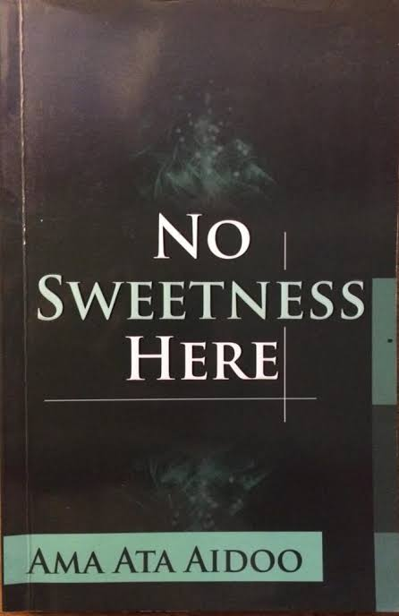
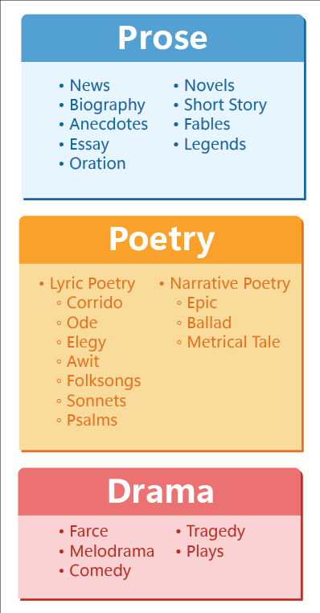
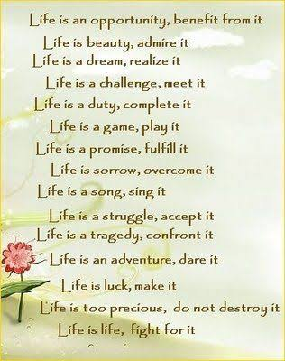
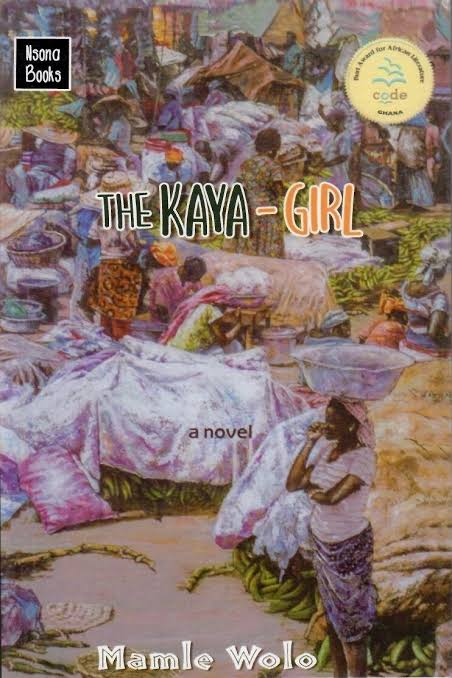
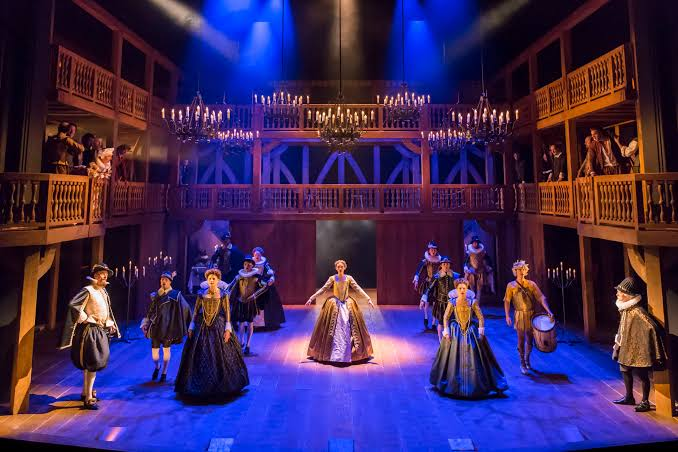
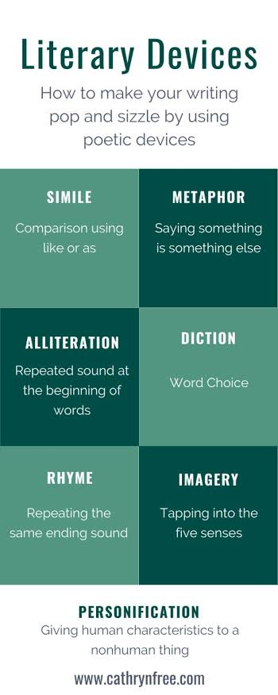
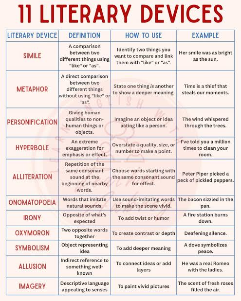
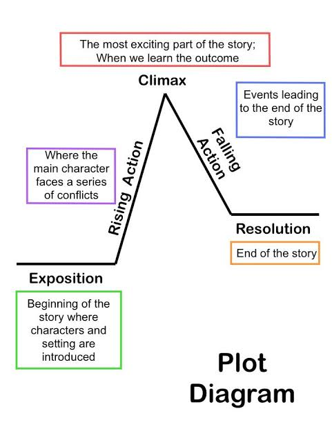
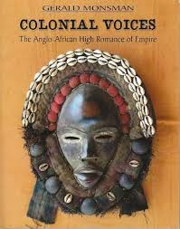
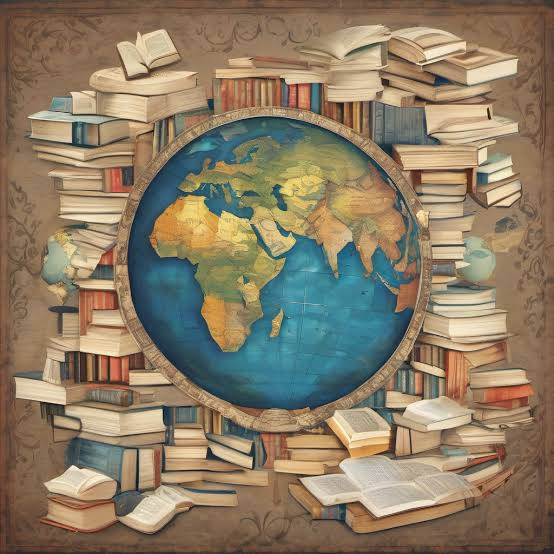

Literature deepens our understanding of humanity, expands imagination, develops critical thinking, and connects us to diverse cultures, histories, and experiences across time.
Literature is the art of written or spoken words that expresses ideas, emotions, and experiences through creative use of language. It encompasses all forms of creative writing including poetry, novels, short stories, plays, and essays. Literature serves multiple purposes: entertainment, education, cultural preservation, social commentary, and exploration of universal human experiences.
The study of literature involves reading carefully, analyzing meaning, recognizing literary techniques, and interpreting significance. Readers examine how writers use language, structure, and symbolism to convey meaning and create emotional effects. Literary analysis builds skills in close reading, critical thinking, and articulate communication that extend far beyond literature into all fields of study and work.
Literature is the most direct path into the human heart and mind, allowing us to live thousands of lives and understand perspectives beyond our own.
Literature is organized into major forms based on structure and presentation. Each form has distinct characteristics and conventions that readers expect. Understanding these forms helps readers anticipate structure and meaning while writers use them as frameworks for expression. The major literary forms are poetry, prose, and drama.

Within each form are numerous genres defined by theme, style, or content. Romance, mystery, science fiction, fantasy, and historical fiction are popular prose genres. Genres help readers find works that match their interests while allowing writers to meet audience expectations and conventions associated with each genre.
Each literary form offers unique tools for exploring human experience, with poetry condensing meaning into music, prose developing narrative fully, and drama bringing characters to life.
Poetry is literature composed in verse, using precise, concentrated language to convey intense emotion and meaning. Poetry relies heavily on sound, rhythm, imagery, and figurative language. A poem may be short or long, but each word is carefully chosen for maximum effect. Poetry explores themes through metaphor, symbolism, and emotional resonance rather than straightforward narrative.

Poetic forms include sonnets with fixed structure, haikus with syllable patterns, free verse without regular meter, and ballads that tell stories. Devices such as rhyme, alliteration, assonance, and meter create musical qualities. Poets use concrete images, metaphors, and symbols to communicate abstract ideas and emotions.
Poetry says more with fewer words, concentrating language into distilled essence that resonates in the reader's heart.
Prose is written language that follows natural speech patterns and does not adhere to formal meter. It is the form used in novels, short stories, essays, and much non-fiction writing. Prose typically develops ideas, characters, and plots with more explanation and detail than poetry, allowing complex narratives to unfold over time. Prose offers flexibility in structure and pacing.

The novel is the longest prose form, often exceeding 300 pages, allowing complex character development and intricate plotting. Short stories are concentrated narratives that develop a single incident or small number of characters. Essays present arguments, explore ideas, or describe experiences in non-fictional prose. Each form serves different purposes and conventions.
Prose builds worlds and characters gradually, drawing readers deeply into imagined experiences through sustained narrative development.
Drama is literature written in dialogue and stage directions, intended to be performed before an audience. Plays reveal character and plot primarily through dialogue and action rather than narrative description. Drama includes tragedies that explore suffering and downfall, comedies that emphasize humor and happy resolution, and various modern forms.

Dramatic structure typically follows exposition (introduction), rising action (building conflict), climax (turning point), falling action (consequences), and resolution. Shakespeare's plays remain influential models of dramatic form. Modern drama explores contemporary issues and pushes conventional boundaries. Understanding drama requires imagining how dialogue and action create meaning and effect.
Drama brings literature to life on stage, where actors embody characters and immediate presence creates powerful emotional connection with audiences.
Writers use literary devices to create specific effects and meanings. Metaphor compares unlike things to reveal new understanding. Simile uses "like" or "as" to compare. Personification gives human qualities to non-human things. Symbolism uses concrete objects to represent abstract ideas. Irony occurs when meaning contradicts expectation, creating humor or emphasis.

Additional devices include allusion (indirect reference to another work), foreshadowing (hints of future events), flashback (returning to past events), imagery (vivid sensory descriptions), and pun (wordplay for humor). Skilled writers layer multiple devices to create rich, complex texts that reward close reading.
Literary devices are the writer's palette, with each technique adding color, depth, and resonance to the writing.
Literary analysis involves carefully examining how a text creates meaning through language choices, structure, and technique. Analysts examine word choice (diction), sentence structure (syntax), tone, point of view, and the relationship between form and content. Analysis answers questions about how and why the author creates particular effects.

Interpretation goes further, considering what the text means in broader contexts such as historical period, cultural values, author's biography, and contemporary society. Multiple valid interpretations often exist for the same text. Literary analysis supports interpretations with specific textual evidence and logical reasoning.
Close reading reveals how every word, image, and structure contributes to the whole meaning of the work.
Narrative elements structure stories and give them meaning. Plot is the sequence of events, typically following conflict from introduction through resolution. Character consists of the people in the story and their development over time. Setting is the time and place where the story occurs, creating atmosphere and context.

Conflict is the central struggle driving the narrative, whether between characters, between character and society, or within a character. Theme is the central idea or insight the work explores. Point of view determines who tells the story and what perspective readers experience. Understanding how these elements interact clarifies meaning and effect.
Every element of narrative—plot, character, setting, conflict, and theme—works together to create a unified artistic whole.
African literature encompasses the rich literary traditions of the African continent, including oral traditions, written works in African languages, and literature in colonial languages. African writers address themes of identity, colonialism, independence, tradition versus modernity, and social justice. Major African authors include Chinua Achebe, Wole Soyinka, Amos Tutuola, and many contemporary writers.

Oral tradition remains central to African literature, with storytelling serving educational, entertainment, and spiritual functions. Written African literature draws on oral techniques such as proverbs, call-and-response, and communal perspective. Contemporary African literature engages global audiences while maintaining distinct cultural voices and concerns specific to African experiences.
African literature reclaims narratives, celebrates cultural heritage, and gives voice to perspectives long silenced by colonialism.
Modern literature emerged in the early 20th century with experimental forms challenging traditional conventions. Modernist writers abandoned linear narrative, employed unreliable narrators, fragmented time, and focused on interior consciousness. Contemporary literature extends these innovations and addresses current issues such as globalization, technology, identity, and social movements.

Contemporary authors increasingly represent diverse perspectives, previously marginalized voices, and cross-cultural experiences. Forms have continued to evolve, with multimodal literature combining text with visual elements, interactive fiction, and digital literature expanding possibilities. Understanding modern and contemporary literature requires openness to experimental forms and diverse perspectives.
Modern and contemporary literature challenge us to see the world anew, questioning assumptions and exploring the complexities of the present age.
Critical reading involves engaging actively with texts, asking questions, and forming interpretations supported by evidence. Critical reading practices include annotating texts, identifying key passages, recognizing patterns, and considering alternative interpretations. Readers read not just to understand plot but to analyze how meaning is constructed.
Critical writing about literature requires clear thesis statements, specific textual evidence, careful analysis of how evidence supports interpretation, and organized argument. Academic literary essays explore questions about meaning, technique, historical context, or significance. Writing about literature strengthens reading skills and develops broader abilities in analysis and persuasive communication.
Critical reading and writing transform passive consumption into active engagement, transforming the reader into a thoughtful interpreter.